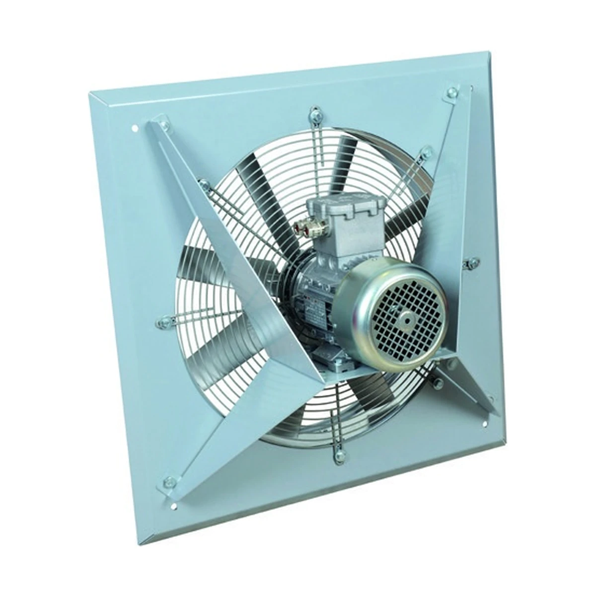

AXW/ATEX Duvar Tipi Exproof Fan
Patlayıcı ortamların duvar tipi havalandırma uygulamaları için aksiyal exproof fan serisi.
Ürün özellikleri
Bu alan Fan Selection veri tabanındaki seri açıklamasından oluşturulur. Böylece ürün sayfası ile seçim programı aynı teknik kaynağı kullanır.
Fan Selection verileri yükleniyor…
Nerede kullanılır?
Katalog kaydındaki uygulama alanları doğrudan gösterilir.
Gerçek model verileri
Nominal debi tek başına seçim kriteri değildir. Nihai modeli, gerekli basınç ve çalışma noktasıyla birlikte Fan Selection üzerinden doğrulayın.
| Model | Nominal debi | Motor | Devir | Akım | Ses |
|---|---|---|---|---|---|
| Model verileri yükleniyor… | |||||
Kaynak: Vensis Fan Selection Suite. Ürün ve motor konfigürasyonları sipariş edilen modele göre doğrulanmalıdır.
Sık sorulan teknik sorular
AXW/ATEX nedir?
Patlayıcı ortamların duvar tipi havalandırma uygulamaları için aksiyal exproof fan serisi. Ürün ailesinin alt modelleri Fan Selection veri tabanından bu sayfada listelenir.
Doğru modeli nasıl seçerim?
Gerekli debi ile birlikte sistem basıncı, çalışma koşulları ve varsa özel güvenlik gereksinimleri belirlenmelidir. Ardından Fan Selection üzerinde çalışma noktası doğrulanmalıdır.
Teknik tablo ile seçim programı neden birlikte kullanılıyor?
Ürün sayfası arama ve AI sistemleri için anlaşılır teknik bağlam sağlar. Fan Selection ise model ve çalışma noktası doğrulamasını yapar.
Projeniz için doğru fanı birlikte seçelim.
Debi, basınç ve uygulama koşullarını paylaşın; uygun seri ve modeli değerlendirelim.